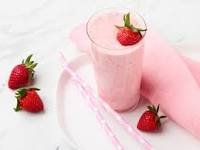

Smoothie

Description
Combine fresh or frozen fruits (e.g., berries, banana, mango)
with yogurt or milk (dairy or plant-based) in a blender. Add
a sweetener like honey or maple syrup if desired. Blend until
smooth and creamy. Pour into a glass, and enjoy a refreshing
and nutritious smoothie.
Ingredients
- Fresh or frozen fruits (e.g., strawberries, blueberries, raspberries, banana, mango, etc.)
- Yogurt (plain or flavored) or Milk (dairy or plant-based)
- Sweetener (e.g., honey, maple syrup) (optional)
Steps
- Choose your favorite combination of fresh or frozen fruits. For example, you can use a mix of berries (strawberries, blueberries, raspberries) or tropical fruits like banana and mango.
- In a blender, add the fruits and a dollop of yogurt or pour in your choice of milk (dairy or plant-based) to create the base of the smoothie.
- If you prefer a sweeter taste, add a drizzle of honey or maple syrup as per your liking
- Close the blender securely and blend all the ingredients until the mixture turns smooth and creamy.
- If you find the smoothie too thick, you can add more liquid (yogurt or milk) to achieve your desired consistency.
- Once the smoothie is well-blended, pour it into a glass and enjoy the refreshing and nutritious treat.